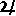
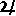

Tincture
Tincture, (fr. email, pl. emaux): the metals, colours, and furs used in armoury are called tincture.
As a general rule, a charge of metal should never be placed upon a metal field, nor a coloured charge upon a coloured field, but to this there are some exceptions. First, what the French call armes pour enquerir, or armes à enquerre, as the insignia of the kingdom of JERUSALEM(See cross, §31), where gold appears on silver; and in other cases where colour appears on colour, e.g.
Gules, a cross vert--DENHAM, Suffolk.
Secondly, the rule dose not extend to chiefs, cantons, and bordures, which, however, are in such cases by some heralds represented as cousu, i.e. giving the idea of the charge being sewed to, and not laid upon, the field. Marks of cadency also, such as labels, bendlets, and batons are exempt from the rule.
The third exception is of a party-coloured field(as quarterly, gyronny, barry, checquy, vair, &c.), which may receive a charge either of metal or colour indifferently, and vice versa.
Barry of ten argent and azure, a lion rampant gules--STRATFORD, Gloucester.
Barry of ten or and gules, a lion rampant argent--STRATFORD, Coventry.
Per pale azure and gules, an oak-tree proper supported on the sinister side by a lion rampant argent--THOMAS, co. Hereford.
The fourth is, when charges are borne of their natural colour, not being one of the recognised tinctures of heraldry. (See Colours.) Such charges are nevertheless generally placed upon a field of a contrasted tincture.
The fifth and last exception, and the most frequent case to which this rule does not extend, is when animals are armed, attired, unguled, crowned, or chained of a tincture different from that of their bodies.
The nine tinctures are as follows, though numbers 8 and 9 are not so clearly recognised as the seven others. See also Colours and Proper.
1. Or . . . . Gold . . . . Sun . . . . Topaz.
2. Argent . . . Silver . . . . Moon . .  . Pearl.
3. Gules . . . Red . . . . Mars . .
. Pearl.
3. Gules . . . Red . . . . Mars . .  . Ruby.
4. Azure . . . Blue . . . . Jupiter .  . Sapphire.
5. Sable . . . Black . . . . Saturn . . . Diamond.
6. Vert . . . Green . . . . Venus . . . Emerald.
7. Purpure . . Purple . . . . Mercury . . Amethyst.
8. Tenné . . . Tenny . . . . Dragon's Head . . . Hyacinth.
9. Sanguine . . Blood colour . Dragon's Tail . . . Sardonix.
. Ruby.
4. Azure . . . Blue . . . . Jupiter .  . Sapphire.
5. Sable . . . Black . . . . Saturn . . . Diamond.
6. Vert . . . Green . . . . Venus . . . Emerald.
7. Purpure . . Purple . . . . Mercury . . Amethyst.
8. Tenné . . . Tenny . . . . Dragon's Head . . . Hyacinth.
9. Sanguine . . Blood colour . Dragon's Tail . . . Sardonix.
The furs are in a sense tinctures, and to a certain extenfollow the rule of the others; that is to say, Ermine is considered as argent, and Ermines as sable, so far as the tinctures of the superimposed charges are concerned.
Ermine. |Ermines. |Pean. |Vair.
Erminois. |Erminites. |Meirri. |Verry.
A brief notice of each of the above will be found beneath their respective headings.
The mode of representation of the tincture by lines was an invention which must be attributed to Silvester Petra-Sancta, an Italian Jesuit, whose book, entitled Tessarœ Gentilitiœ, printed at Rome in 1638(or rather his earlier book, De Symbolis heroicis, libri ix., 1634), seems to have been the first work in which the system was used. The claim of Marie Vulson de la Colombiere will not hold, as his work did not appear till 1639.
Some whimsical heralds have called the tinctures borne by kings by the names of Planets and other heavenly bodies, as given above; and this method so far made way that in some few heraldic MSS. the tincture are expressed in the tricking by the astronomical marks denoting the planets.
Other heraldic writers again have given to the tinctures of the arms of peers the names of precious stones, also shewn above, but this practice is now looked upon as absurd, and calculated to bring the science into ridicule. Sir John FERNE, in his Blazon of Gentry issued in 1586, enumerates fourteen different methods of blazon as follows:--1. By colours; 2. By planets; 3. By precious stones; 4. By virtues; 5. By celestial signs; 6. By the months of the year; 7. By the days of the week; 8. By the ages of man; 9. By flowers; 10. By the elements; 11. By the seasons of the year; 12. By the complexions of man; 13. By numbers; 14. By metals. Such fanciful arrangements, however, tend to degrade the study of heraldry into a mere amusement. Happily they were never much used.